第 16 章 霍夫变换#
本章解决：边缘图上散着一堆点，怎么知道哪些点排成直线、哪些围成一个圆？霍夫变换（Hough Transform）的办法是换一个空间想问题：把每个点搬进参数空间，给所有可能经过它的形状各投一票，得票最高的参数就是图像里的直线或圆。直线用 ρ-θ 极坐标参数化，躲开垂线斜率无穷大的坑；圆有圆心、半径三个参数，OpenCV 用两轮筛选降维。该变换 1962 年由 Paul Hough 提出，从只能检测直线，发展成能检测圆、椭圆等一切能写出参数方程的简单形状。
运行环境约定
本章代码引用本目录根下的素材（picture9.jpg、picture2.png、picture8.jpg），路径写作相对路径。运行时工作目录需为 数字图像处理-python 根目录，否则 imread 返回 None。原书用 computer.jpg（计算器照片）演示两处直线检测、chess.jpg（三枚象棋棋子）演示圆检测；跟随代码统一换成素材目录里的图片：picture9.jpg（黑底三个白色矩形）演示 HoughLines，picture2.png 演示 HoughLinesP，picture8.jpg 演示 HoughCircles。代码逻辑一字未改，检测到的线条数、圆数会随图片不同而不同；个别阈值也按素材图做了调整（例 16.1 原书 threshold=140、跟随代码用 100）。
16.0 本章导图#
16.1 霍夫直线变换#
OpenCV 提供了函数 cv2.HoughLines() 和函数 cv2.HoughLinesP() 实现霍夫直线变换（Hough Line Transform）。本节先介绍霍夫变换的基本原理，再分别介绍这两个函数的使用方法。
16.1.1 霍夫变换原理#
从熟悉的笛卡儿坐标系（对应笛卡儿空间，Cartesian space）说起。与它对应，构造一个霍夫坐标系（对应霍夫空间，Hough space）：横坐标取笛卡儿坐标系中直线的斜率（slope）k，纵坐标取截距（intercept）b，即 k-b 空间。
**直线映射成点。**在笛卡儿空间 x-y 里取一条直线 \(y = k_0 x + b_0\)，斜率 \(k_0\)、截距 \(b_0\) 都是已知常量。把它映射到霍夫空间，只需找到点 \((k_0, b_0)\)——映射完成。
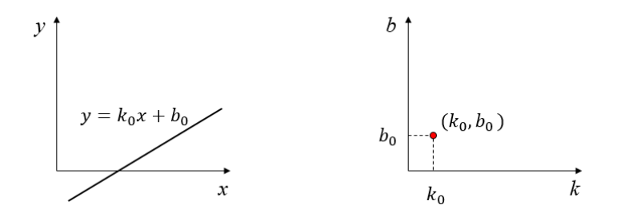
由上可知：笛卡儿空间内的一条直线（斜率 k、截距 b），映射到霍夫空间内成为一个点 (k, b)；反过来，霍夫空间内的一个点 \((k_0, b_0)\)，映射到笛卡儿空间就是一条直线 \(y = k_0 x + b_0\)。这里的"映射"表达不同空间（坐标系）之间的对应关系，也可以表述为"确定"：
- 笛卡儿空间内的一条直线确定了霍夫空间内的一个点。
- 霍夫空间内的一个点确定了笛卡儿空间内的一条直线。
**点映射成直线。**在笛卡儿空间内取一个点 \((x_0, y_0)\)。通过该点的所有直线都能写成 \(y_0 = k x_0 + b\)，其中 \((x_0, y_0)\) 是已知常量，(k, b) 是变量。左右移项：
把点 \((x_0, y_0)\) 映射到霍夫空间，得到一条斜率为 \(-x_0\)、截距为 \(y_0\) 的直线。
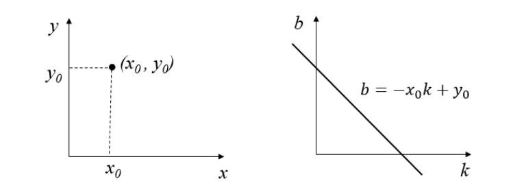
- 笛卡儿空间内的点 \((x_0, y_0)\) 映射到霍夫空间，就是直线 \(b = -x_0 k + y_0\)。
- 霍夫空间内的直线 \(b = -x_0 k + y_0\) 映射回笛卡儿空间，就是点 \((x_0, y_0)\)。
原书笔误：斜率写成了截距
原书在介绍图 16.1 时写"该直线的截距 \(k_0\) 是已知的常量"——\(k_0\) 是斜率，不是截距。后文讲两点连线时"该直线的截距和斜率是 \((k_1, b_1)\)"也颠倒了顺序：\((k_1, b_1)\) 中 k 是斜率、b 是截距，应读作"斜率和截距"。
**两个点：两条线交于一点。**取笛卡儿空间内任意两点 \((x_0, y_0)\)、\((x_1, y_1)\)，从两个角度看它们到霍夫空间的映射：
- 角度 1（一个点 → 一条线）：两个点各自映射为霍夫空间内的一条直线，分别是 \(b = -x_0 k + y_0\) 与 \(b = -x_1 k + y_1\)。
- 角度 2（一条线 → 一个点）：两点必能连成一条直线，记为 \(y = k_1 x + b_1\)，它在霍夫空间内映射为点 \((k_1, b_1)\)。
合起来：笛卡儿空间内的两个点，会映射为霍夫空间内两条相交于 \((k_1, b_1)\) 的直线。角度 1 决定线条的数量，角度 2 决定两条线相交的点。换句话说：若笛卡儿空间内两点 A、B 能连成直线 \(y = k_1 x + b_1\)，那么霍夫空间中的点 \((k_1, b_1)\) 上会有两条直线穿过，分别对应 A 和 B。
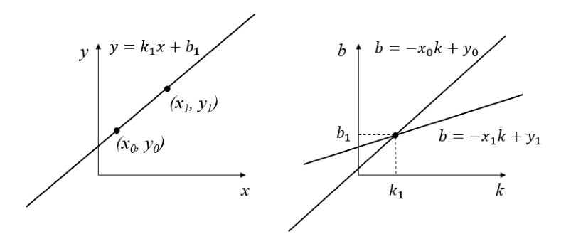
**三个点：交点开始"显形"。**在笛卡儿空间内取 (0, 1)、(1, 2)、(2, 3) 三个点。
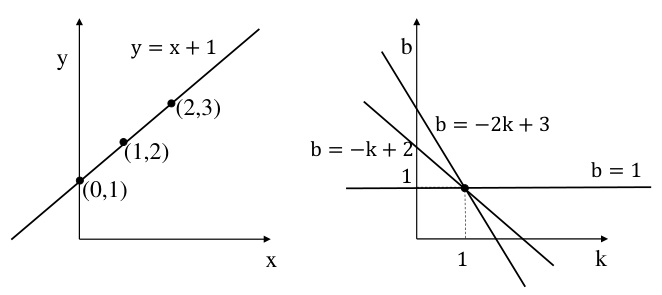
角度 1：每个点对应霍夫空间内的一条直线，对应关系如表 16-1 所示。
表 16-1 空间对应关系
| 笛卡儿空间内的点 | 笛卡儿空间内的关系 \(y = kx + b\) | 霍夫空间 |
|---|---|---|
| (0, 1) | \(1 = 0 \cdot k + b\) | \(b = -0 \cdot k + 1\) |
| (1, 2) | \(2 = 1 \cdot k + b\) | \(b = -1 \cdot k + 2\) |
| (2, 3) | \(3 = 2 \cdot k + b\) | \(b = -2 \cdot k + 3\) |
- 笛卡儿空间内的点 (0, 1)，对应霍夫空间内的直线 \(b = 1\)；
- 笛卡儿空间内的点 (1, 2)，对应霍夫空间内的直线 \(b = -k + 2\)；
- 笛卡儿空间内的点 (2, 3)，对应霍夫空间内的直线 \(b = -2k + 3\)。
三个点映射为霍夫空间内的三条直线。角度 2：这三个点连成的直线是 \(y = x + 1\)，斜率 1、截距 1，映射到霍夫空间内的点 (1, 1)。两条结论：
- 笛卡儿空间中的三个点，映射为霍夫空间内相交于点 (1, 1) 的三条直线；
- 三个点所连成（确定）的直线，映射为霍夫空间内的点 (1, 1)。
**规律成形。**推广到一般：笛卡儿空间内有 N 个点能连成一条直线 \(y = k_1 x + b_1\)，霍夫空间内就会有 N 条直线穿过对应的点 \((k_1, b_1)\)。反过来说：霍夫空间中穿过点 \((k_1, b_1)\) 的直线越多，说明笛卡儿空间内有越多的点落在斜率 \(k_1\)、截距 \(b_1\) 的直线上。
**六个点验证。**笛卡儿空间内有 6 个点：(0, 1)、(1, 2)、(2, 3)、(3, 4)、(3, 2)、(1, 4)。
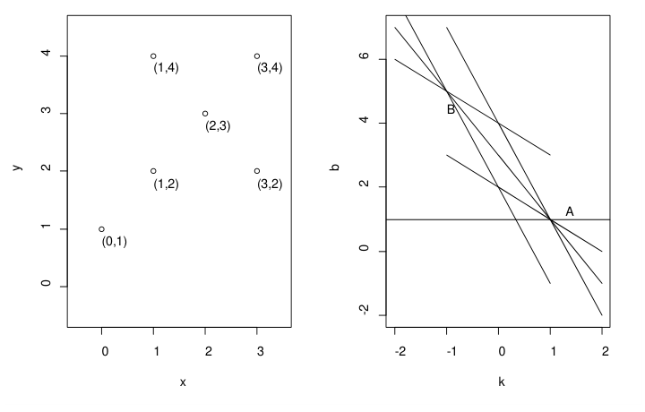
角度 1：每个点对应霍夫空间内的一条直线，对应关系如表 16-2 所示。
表 16-2 6 个点的空间对应关系
| 笛卡儿空间内的点 | 笛卡儿空间关系 \(y = kx + b\) | 霍夫空间 |
|---|---|---|
| (0, 1) | \(1 = 0 \cdot k + b\) | \(b = -0 \cdot k + 1\) |
| (1, 2) | \(2 = 1 \cdot k + b\) | \(b = -1 \cdot k + 2\) |
| (2, 3) | \(3 = 2 \cdot k + b\) | \(b = -2 \cdot k + 3\) |
| (3, 4) | \(4 = 3 \cdot k + b\) | \(b = -3 \cdot k + 4\) |
| (3, 2) | \(2 = 3 \cdot k + b\) | \(b = -3 \cdot k + 2\) |
| (1, 4) | \(4 = 1 \cdot k + b\) | \(b = -1 \cdot k + 4\) |
6 个点映射为霍夫空间内的 6 条直线。角度 2：把连接了较多点的线画出来——LineA 连接 (0, 1)、(1, 2)、(2, 3)、(3, 4)；LineB 连接 (2, 3)、(3, 2)、(1, 4)；LineC 连接 (0, 1)、(3, 2)。原书提醒：各点之间其实还存在多条连线（例如 (1, 2) 与 (3, 2) 之间、(3, 2) 与 (3, 4) 之间、(1, 4) 与 (3, 4) 之间），图中做了简化，没有全部画出。
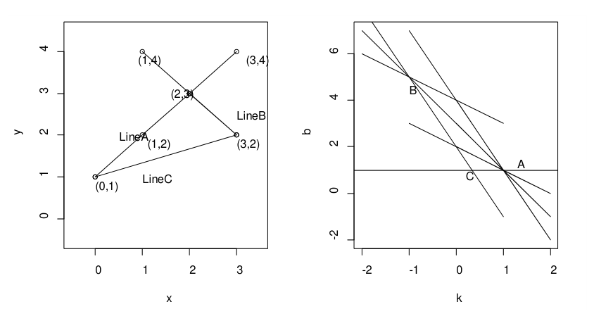
三条直线在霍夫空间内的映射：
- LineA 经过 4 个点，表达式 \(y = 1 \cdot x + 1\)，斜率 1、截距 1，对应霍夫空间内的点 A(1, 1)——有 4 条直线穿过 A；
- LineB 经过 3 个点，表达式 \(y = -1 \cdot x + 5\)，斜率 −1、截距 5，对应点 B(−1, 5)——有 3 条直线穿过 B；
- LineC 经过 2 个点，表达式 \(y = -\frac{1}{3}x + 1\)，斜率 −⅓、截距 1，对应点 C(−⅓, 1)——有 2 条直线穿过 C。
逐条分析：霍夫空间内点 A 处有 4 条直线穿过，说明点 A 确定的笛卡儿空间直线（即 LineA）上有 (0, 1)、(1, 2)、(2, 3)、(3, 4) 共 4 个点；点 B 处 3 条直线穿过，LineB 上有 (2, 3)、(3, 2)、(1, 4) 共 3 个点；点 C 处 2 条直线穿过，LineC 上有 (0, 1)、(3, 2) 共 2 个点。
**投票思想落地。**霍夫空间内经过一个点的直线越多，说明其映射回笛卡儿空间的直线由越多的点构成。两个点就能构成一条直线——但若其中一点是计算错误产生的，它和另一个点也会"凭空"构成一条实际并不存在的直线，这种情况要极力避免。用更多的点构造一条直线，直线的可靠性才高：一条直线由越多的点构成，它实际存在的可能性越大。霍夫变换选择直线的基本思路：选择有尽可能多直线交汇的点。
**垂线的麻烦。**笛卡儿空间里还有 \(x = x_0\) 这样的垂线：斜率 k 为无穷大，截距 b 无法取值，它无法映射到 k-b 霍夫空间内。
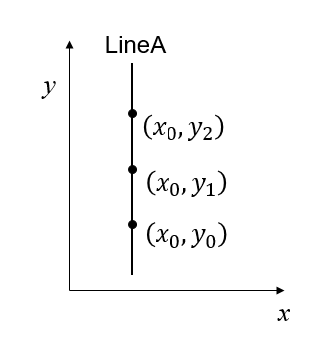
解决方法：把笛卡儿坐标系映射到极坐标系（polar coordinate system）上。
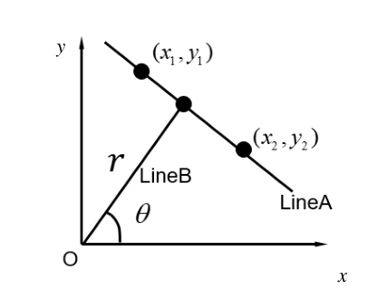
极坐标系内不用斜率和截距，改用极径 r（原书写法，OpenCV 里叫 rho，本笔记统一写作 ρ）和极角 θ，即用 \((\rho, \theta)\) 表示。极坐标系中的直线可以表示为：
其中 ρ 是直线到图像原点 O 的距离，θ 是直线的垂线 LineB 与 x 轴的夹角。这种表示方法下，图像中的直线角度 θ 的范围是 \(0 \sim \pi\)，ρ 的最大值是图像对角线的长度——图 16.7 中垂线上的三个点，也能方便地表示了。
与笛卡儿空间和霍夫空间的映射关系类似：
- 极坐标系内的一个点，映射为霍夫坐标系（霍夫空间）内的一条线（曲线）；
- 极坐标系内的一条线，映射为霍夫坐标系内的一个点。
一般用霍夫坐标系内相交于一点的线的数量，来评估极坐标系内的直线：经过一个点的线越多，说明其映射回极坐标系的直线由越多的点构成。霍夫变换选择直线的基本思路不变：**选择由尽可能多条线汇成的点。**通常设置一个阈值（threshold）：当霍夫坐标系内交于某点的曲线达到阈值，就认为在对应的极坐标系内存在（检测到）一条直线。
拓展：ρ 会出现负数吗
会。θ 的搜索范围是 \([0, \pi)\)，当 θ 落在 \(90° \sim 180°\) 区间时 \(\cos\theta < 0\)，部分点的 \(\rho = x\cos\theta + y\sin\theta\) 算出来是负值。OpenCV 的累加器把 ρ 的取值范围开成关于 0 对称的区间（量级为图像宽高之和），负 ρ 只表示"垂足在原点的另一侧"，直线本身不变。所以遍历 lines 时不要对 ρ 非负做假设，画线代码也无需特殊处理。
以上就是霍夫变换的原理。即使完全不理解原理，也不影响使用 OpenCV 提供的霍夫变换函数——OpenCV 本身是一个黑盒子，给我们提供接口（参数、返回值），掌握接口的正确用法就能正确处理图像，无须掌握内部工作原理。在某种情况下，OpenCV 和 Photoshop 等图像处理软件类似：会用就能得到正确的处理结果，不必关注实现细节；但进一步了解工作原理，对工作大有裨益。
16.1.2 HoughLines 函数#
OpenCV 提供函数 cv2.HoughLines() 实现霍夫直线变换，对应的就是上面讲的标准霍夫变换（Standard Hough Transform）。该函数要求源图像是二值图像，所以变换之前要先将源图像二值化，或者进行 Canny 边缘检测。
拓展：投票前首选 Canny，而不是阈值二值化
两条路都行，但实践中首选 Canny（第 10 章）：它的非极大值抑制会把每条边缘压到约单像素宽，一个真实边缘只投出一组 \((\rho, \theta)\)。阈值二值化得到的白色区域往往好几像素宽，同一根线的两条边界各自投票，结果里出现成对的重复直线。本章实跑验证：一根 3 像素宽的直线在 threshold=100 下检出 3 对 \((\rho, \theta)\)——两条边缘各一对，再加一对合并结果。
函数 cv2.HoughLines() 的语法格式为：
| 参数 | 含义 |
|---|---|
| image | 输入图像（源图像），必须是 8 位单通道二值图像。其他类型的图像要先转成该格式 |
| rho | 以像素为单位的距离 ρ 的精度。一般情况下取 1 |
| theta | 角度 θ 的精度。一般情况下取 \(\pi/180\)，表示要搜索所有可能的角度 |
| threshold | 阈值。该值越小，判定出的直线就越多；越大越少 |
threshold 的作用机制：识别直线时要判定有多少个点落在该直线上——若直线穿过的点数小于阈值，认为这些点只是偶然在算法上构成直线，源图像中该直线并不存在；大于阈值才认为直线存在。所以阈值小 → 直线多，阈值大 → 直线少。
返回值 lines 中的每个元素都是一对浮点数 \((\rho, \theta)\)，表示检测到的直线的参数，类型为 numpy.ndarray。
要强调一点：HoughLines 检测到的是直线，不是线段，因此没有端点。绘制时画的都是穿过整幅图像的直线：对垂直方向的直线（不是指垂线，是指垂直方向上各种角度的直线），计算它与图像水平边界（第一行和最后一行）的交点，在两个交点之间画线；对水平方向的直线，方式类似，用第一列和最后一列。画线用 cv2.line()，它方便在即使点的坐标超出图像范围也能正确画线，所以没必要检查交点是否位于图像内部。遍历返回值 lines，就能画出所有直线。
【例 16.1】使用函数 cv2.HoughLines() 对一幅图像进行霍夫变换，观察效果。
# ===== 16.1.2 例 16.1：HoughLines 检测直线 =====
import cv2
import numpy as np
import matplotlib.pyplot as plt
img = cv2.imread("picture9.jpg") # 读入彩色图（原书 computer.jpg）
gray = cv2.cvtColor(img, cv2.COLOR_BGR2GRAY) # 转灰度，作为 Canny 的输入
edges = cv2.Canny(gray, 50, 150, apertureSize=3) # Canny 边缘检测：得到二值边缘图
orgb = cv2.cvtColor(img, cv2.COLOR_BGR2RGB) # 转 RGB，交给 matplotlib 显示
oshow = orgb.copy() # 复制一份原图留底
lines = cv2.HoughLines(edges, 1, np.pi/180, 100)
# 参数：edges 二值边缘图；1 → rho 精度 1 像素；
# np.pi/180 → theta 精度 1°；100 → 投票阈值
for line in lines: # 遍历每一条检测到的直线
rho, theta = line[0] # 取出 (rho, theta) 参数对
a = np.cos(theta) # a = cosθ（法向量 x 分量）
b = np.sin(theta) # b = sinθ（法向量 y 分量）
x0 = a*rho # 垂足 x 坐标 = rho·cosθ
y0 = b*rho # 垂足 y 坐标 = rho·sinθ
x1 = int(x0 + 1000*(-b)) # 垂足沿直线方向前伸 1000 → 端点 1
y1 = int(y0 + 1000*(a))
x2 = int(x0 - 1000*(-b)) # 垂足沿直线方向后伸 1000 → 端点 2
y2 = int(y0 - 1000*(a))
cv2.line(orgb, (x1, y1), (x2, y2), (0, 255, 255), 2) # 画线，超界也能画
plt.subplot(121) # 左图：Canny 边缘图
plt.imshow(edges, cmap='gray')
plt.axis("off")
plt.subplot(122) # 右图：叠加了检测直线的原图
plt.imshow(orgb)
plt.axis("off")
plt.show()
代码分三步：Canny 找边缘 → HoughLines 投票得到 \((\rho, \theta)\) → 把 \((\rho, \theta)\) 换算成两个端点画线。前两步如注释所述；第三步的换算见下方拓展。
拓展：例 16.1 画线代码在算什么
\((\rho, \theta)\) 没有端点，画线前要自己造两个。把 \(\rho = x\cos\theta + y\sin\theta\) 看成"法向量为 \((\cos\theta, \sin\theta)\)、法向距离为 \(\rho\)"的直线：从原点沿法向量走 \(\rho\) 个单位，落点 \((x_0, y_0) = (\rho\cos\theta, \rho\sin\theta)\) 正是原点到直线的垂足，这就是 x0 = a*rho、y0 = b*rho 两行。直线的方向向量与法向量垂直，取 \((-\sin\theta, \cos\theta)\)，正是代码里的 \((-b, a)\)。从垂足沿方向向量向前、向后各走 1000 个单位，得到 \((x_1, y_1)\) 与 \((x_2, y_2)\)。直线比图像长得多，端点落在图外也没关系——cv2.line() 对超界坐标照样画。
运行程序，结果如图 16.9 所示。
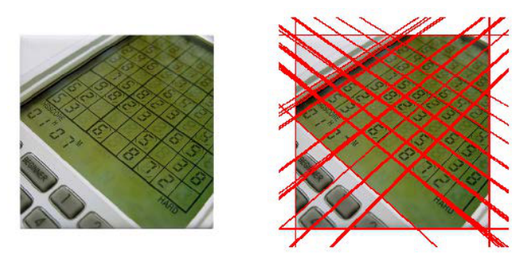
图 16.9 右图中较粗的直线，是因为有多条直线靠近在一起——检测出了重复的结果。一些情况下，霍夫变换可能把图像中有限个点碰巧对齐的非直线关系检测为直线，导致误检测（false detection），复杂背景的图像尤其明显。本图该问题不算特别明显，但把 threshold 的值调小些，仍会出现较多重复的检测结果。OpenCV 官网提供一幅名为 building.jpg 的图像用于测试：该图在霍夫变换下存在非常严重的误检测。为解决上述问题，人们提出了霍夫变换的改进版——概率霍夫变换。
16.1.3 HoughLinesP 函数#
概率霍夫变换（Probabilistic Hough Transform）对基本霍夫变换的算法做了一些修正，是霍夫变换的优化：它没有考虑所有的点，只需要一个足以进行线检测的随机点子集（random subset）。
为了更好地判断直线（线段），概率霍夫变换还对选取直线的方法做了两点改进：
- **所接受直线的最小长度。**如果有超过阈值个数的像素点构成了一条直线，但这条直线很短，就不接受它作为判断结果，而认为这些像素点只是碰巧随机构成了算法上的直线关系，原图中并不存在这条直线。
- **接受直线时允许的最大像素点间距。**如果有超过阈值个数的像素点构成了一条直线，但这组像素点之间的距离都很远，同样不接受，认为它只是偶然的算法上的直线关系。
拓展：'概率'二字从哪来
概率霍夫变换的完整来历是渐进概率霍夫变换（Progressive Probabilistic Hough Transform, PPHT），由 Matas 等人于 2000 年提出。标准霍夫变换让每个边缘点都投票，票箱大、耗时长；PPHT 随机抽取一部分边缘点投票，一旦某条线的票数足够就"提前收工"，把该线段覆盖的点移出投票队列。省了票箱，还顺带得到线段端点——这就是 HoughLinesP 返回端点的原因。OpenCV 实现的就是 PPHT。
在 OpenCV 中，函数 cv2.HoughLinesP() 实现概率霍夫变换，语法格式为：
| 参数 | 含义 |
|---|---|
| image | 输入图像（源图像），必须为 8 位单通道二值图像 |
| rho | 以像素为单位的距离 ρ 的精度，一般取 1 |
| theta | 角度 θ 的精度，一般取 np.pi/180，表示搜索可能的角度 |
| threshold | 阈值。值越小判定出的直线越多，越大越少 |
| minLineLength | 控制"接受直线的最小长度"，默认值 0 |
| maxLineGap | 接受共线线段之间的最大间隔，即一条线中两点的最大间隔；间隔超过 maxLineGap 的两点视为不在一条线上。默认值 0 |
原书笔误：HoughLinesP 的返回值不是 (ρ, θ)
原书在参数说明里写"返回值 lines……其中每个元素都是一对浮点数，表示检测到的直线的参数，即 (r, θ)"——这是把 HoughLines 的返回值说明照抄过来了。HoughLinesP 返回的每个元素是 4 个整数 \([x_1, y_1, x_2, y_2]\)，即线段的两个端点坐标（实跑验证：lines.shape 为 (N, 1, 4)，dtype 为 int32）。例 16.2 代码里 x1, y1, x2, y2 = line[0] 也是按端点解包的——代码与文字自相矛盾，以代码为准。
【例 16.2】使用函数 cv2.HoughLinesP() 对一幅图像进行霍夫变换，观察检测效果。
# ===== 16.1.3 例 16.2：HoughLinesP 检测线段 =====
import cv2
import numpy as np
import matplotlib.pyplot as plt
img = cv2.imread("picture2.png", -1) # -1 保持原样读入（原书 computer.jpg）
gray = cv2.cvtColor(img, cv2.COLOR_BGR2GRAY)
edges = cv2.Canny(gray, 50, 150, apertureSize=3)
orgb = cv2.cvtColor(img, cv2.COLOR_BGR2RGB)
oshow = orgb.copy() # 原图留底
lines = cv2.HoughLinesP(edges, 1, np.pi/180, threshold=100,
minLineLength=200, maxLineGap=10)
# 参数：threshold=100 投票阈值；minLineLength=200 短于 200 像素的线不要；
# maxLineGap=10 断开超过 10 像素的两段不并成一条线
for line in lines:
x1, y1, x2, y2 = line[0] # 直接解包线段端点，无需换算
cv2.line(orgb, (x1, y1), (x2, y2), (0, 255, 0), 5) # 画绿色线段
plt.subplot(121), plt.imshow(edges)
plt.axis('off')
plt.subplot(122), plt.imshow(orgb)
plt.axis('off')
plt.show()
与例 16.1 对比有两处变化：调用改成 HoughLinesP，多出 minLineLength 与 maxLineGap 两个筛选参数；循环体里直接解包端点画线段，不再需要 \((\rho, \theta)\) 到端点的换算。运行程序，概率霍夫变换的结果如图 16.10 所示——比霍夫变换得到的检测结果更准确。
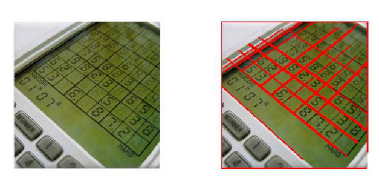
16.2 霍夫圆环变换#
霍夫变换除了用来检测直线，也能用来检测其他几何对象。实际上，只要是能够用一个参数方程表示的对象，都适合用霍夫变换来检测。
用霍夫圆变换（Hough Circle Transform）检测图像中的圆，与霍夫直线变换的原理类似，但参数多了一个：需要考虑圆半径和圆心（x 坐标、y 坐标）共 3 个参数。在 OpenCV 中采用的策略是两轮筛选：第 1 轮筛选找出可能存在圆的位置（圆心）；第 2 轮再根据第 1 轮的结果筛选出半径大小。
与决定是否接受直线的两个参数（最小长度 minLineLength、最大间距 maxLineGap）类似，霍夫圆变换也有几个决定是否接受圆的参数：圆心间的最小距离、圆的最小半径、圆的最大半径。
在 OpenCV 中，实现霍夫圆变换的是函数 cv2.HoughCircles()，该函数将 Canny 边缘检测和霍夫变换结合。语法格式为：
| 参数 | 含义 |
|---|---|
| image | 输入图像（源图像），类型为 8 位单通道灰度图像 |
| method | 检测方法。截止 OpenCV 4.0.0-pre，HOUGH_GRADIENT 是唯一可用的参数值，代表两轮检测所使用的方法 |
| dp | 累加器分辨率（accumulator resolution），一个分割比率，指定图像分辨率与圆心累加器分辨率的比例。例如 dp=1 时输入图像与累加器具有相同的分辨率 |
| minDist | 圆心间的最小间距，作为阈值使用：圆心间距离小于该值的多个圆只有一个会被检测出来。太小 → 多个临近圆被重复检出；太大 → 可能漏掉一些圆 |
| param1 | 缺省时默认 100。对应 Canny 边缘检测器的高阈值（低阈值是高阈值的二分之一） |
| param2 | 圆心位置必须收到的投票数。第 1 轮筛选中投票数超过该值的圆才有资格进入第 2 轮。越大 → 检测到的圆越少；越小 → 圆越多。缺省时默认 100 |
| minRadius | 圆半径的最小值，小于该值的圆不会被检测出来。缺省时默认 0 |
| maxRadius | 圆半径的最大值，大于该值的圆不会被检测出来。缺省时默认 0 |
| circles | 返回值，由圆心坐标和半径构成的 numpy.ndarray |
原书笔误：函数名 HoughLinesCircles
原书两处把函数名写错："在调用函数 cv2.HoughLinesCircles() 之前"与例 16.3 标题"使用 HoughLinesCircles 函数"。OpenCV 没有这个名字，正确函数名是 cv2.HoughCircles()。
原书表述不严谨：maxRadius 缺省值 0 并非'不起作用'
原书说 minRadius、maxRadius 缺省值 0 时"该参数不起作用"。对 minRadius=0 成立——不设半径下限；但 OpenCV 官方文档规定 maxRadius ≤ 0 时取图像最大维度作为半径上限，并不是没有上限。半径范围明确时，务必显式给出 minRadius 和 maxRadius。
需要特别注意：在调用该函数之前，要对源图像进行平滑操作（如中值滤波），以减少图像中的噪声，避免发生误判。该函数具有非常多的参数，实际检测中可以根据需要设置不同的值。
拓展：HOUGH_GRADIENT 的两轮到底怎么投
第一轮找圆心：对每个 Canny 边缘点，沿它的梯度（gradient）方向投票——圆上任一点的梯度方向必指向（或背向）圆心，所以真圆心位置的累加器票数最高，票数超过 param2 的位置成为候选圆心。这也是方法名 HOUGH_GRADIENT 的由来：投票方向由梯度决定，不像直线变换那样对每个角度都投。第二轮定半径：对每个候选圆心，统计它到周围边缘点的距离，得票最多的距离就是半径。两轮各管一维，把三维参数空间的搜索拆成了"二维 + 一维"，省下大量计算。
拓展：OpenCV 4.3 起还有 HOUGH_GRADIENT_ALT
method 参数不再只有 HOUGH_GRADIENT 一个选项：OpenCV 4.3 新增了 HOUGH_GRADIENT_ALT。官方文档给出的用法：dp 推荐 1.5；param1 仍是 Canny 高阈值（内部改用 Scharr 算子，建议取 300 左右）；param2 变成衡量"圆的完美度"（perfectness）的指标，0.9 通常够用，检测很小的圆可降到 0.85 或 0.8。检测质量普遍优于 HOUGH_GRADIENT，计算量也更大。（来源：OpenCV 官方文档 imgproc 模块 Image Processing 一节。）
【例 16.3】使用 HoughCircles 函数对一幅图像进行霍夫圆变换，观察检测效果。
# ===== 16.2 例 16.3：HoughCircles 检测圆 =====
import cv2
import numpy as np
import matplotlib.pyplot as plt
imgo = cv2.imread("picture8.jpg", -1) # 原书 chess.jpg（三枚象棋棋子）
img = cv2.cvtColor(imgo, cv2.COLOR_BGR2GRAY) # 灰度图：HoughCircles 的输入要求
o = cv2.cvtColor(imgo, cv2.COLOR_BGR2RGB) # RGB 版本，交给 matplotlib 显示
oshow = o.copy() # 原图留底，用于左右对照
img = cv2.medianBlur(img, 5) # 中值滤波去噪：调用前必须平滑
circles = cv2.HoughCircles(img, cv2.HOUGH_GRADIENT, 1, 300,
param1=50, param2=30, minRadius=100, maxRadius=200)
# 参数：img 灰度图；HOUGH_GRADIENT 检测方法；dp=1 累加器与原图同分辨率；
# 300 → 圆心最小间距；param1=50 → Canny 高阈值；
# param2=30 → 圆心投票数阈值；半径只认 100~200 的圆
circles = np.uint16(np.around(circles)) # 四舍五入取整，转 uint16 方便画图
for i in circles[0, :]: # circles 形状 (1, N, 3)，先取第 0 维
cv2.circle(o, (i[0], i[1]), i[2], (0, 255, 0), 2) # 画圆环：圆心 + 半径，绿色
cv2.circle(o, (i[0], i[1]), 2, (0, 0, 255), 12) # 画圆心：半径 2 的粗实心点
plt.subplot(121)
plt.imshow(oshow)
plt.axis('off')
plt.subplot(122)
plt.imshow(o, cmap='gray')
plt.axis('off')
plt.show()
几个关键行：medianBlur(img, 5) 在投票前抹掉噪声；circles 的形状是 (1, N, 3)，N 个圆各占一行，三个数依次是圆心 x、圆心 y、半径，所以遍历用 circles[0, :]；两个 cv2.circle() 一个画圆环、一个把圆心戳成粗点。原书用 (255, 0, 0) 画圆（RGB 下是红色），书中正文说"为了方便在纸质版图书上观察，圆环和圆心都用白色显示"——跟随代码改用绿色圆环 + 红色圆心，屏幕上更清楚。
运行程序，结果如图 16.11 所示，霍夫圆变换检测到了源图像中的三个圆。
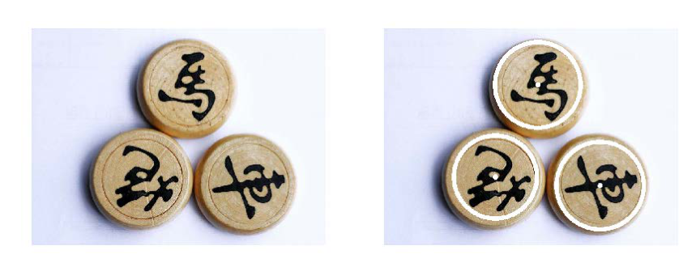
检测中可能需要不断调整参数才能得到最优结果。例如，把参数改为 circles = cv2.HoughCircles(img, cv2.HOUGH_GRADIENT, 1, 20, param1=50, param2=30, minRadius=0, maxRadius=0)——minDist 从 300 放宽到 20，半径上下限全部放开——针对图 16.11 左图检测的结果如图 16.12 所示：仔细观察可以看到图中绘制了非常多的圆和圆心。
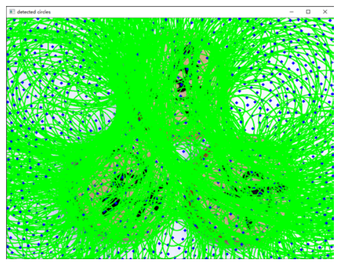
参数为什么有这么大威力：minDist 变小允许临近的圆扎堆出现，minRadius/maxRadius 放开让大小各异的圆都有机会当选，误检随之一起涌出来。实际项目的调参常规顺序：先用 minRadius/maxRadius 把半径范围卡死，再调 param2 控制数量，最后用 minDist 清理扎堆。
坑与陷阱#
8 个容易踩的坑
- 不喂二值图，投票全作废：
HoughLines/HoughLinesP的 image 要求 8 位单通道二值图。直接喂灰度图能跑，但灰度过渡处全是"伪边缘"，投票结果没有意义。标准动作：edges = cv2.Canny(gray, 50, 150, apertureSize=3)。 HoughLines给的是无限长直线：返回 \((\rho, \theta)\) 参数对、没有端点，画出来贯穿整幅图。想要线段端点，必须用HoughLinesP。两者返回值形状不同：前者 (N, 1, 2)，后者 (N, 1, 4)。- 返回 None 没人接：threshold 调太高，或者图里根本没有符合半径范围的圆时，返回值是 None。此时
for line in lines报TypeError: 'NoneType' object is not iterable，np.around(circles)同样炸。先判if lines is None再遍历。 - threshold 取太小，误检泛滥：例 16.2 的 threshold=1 是演示值——几乎所有"碰巧对齐"的点都被判成直线，复杂背景图上尤其灾难。从 100 起步往上调，调到误检消失、真线还在为止。
- minLineLength / maxLineGap 是像素单位：跟着图像尺寸走，不是比例。分辨率差几倍的两张图，参数不能直接照抄；默认 0 表示不限制（多短的线、断多远都接受）。
HoughCircles前不平滑 = 自找误检：书上特别强调调用前要平滑。噪声点会被当作边缘参与投票，冒出一堆假圆。标准动作：img = cv2.medianBlur(img, 5)。- param2 与 minDist 联动：param2 太小、minDist 太小，临近圆扎堆（图 16.12 的海量圆就是这么来的）；minDist 太大又漏圆。先卡 minRadius/maxRadius，再动这两个。
- circles 形状是 (1, N, 3)：遍历要
circles[0, :]，直接for i in circles会多套一层循环。三个数依次是 x、y、r，已经过np.around取整（随后np.uint16转成无符号整数方便画图）。
速览#
- 霍夫变换用投票找形状：把边缘点映射到参数空间，同一形状上的点在参数空间交于一点，票数过阈值即检出。
- 笛卡儿 k-b 空间里：直线 → 点 (k, b)，点 \((x_0, y_0)\) → 直线 \(b = -x_0 k + y_0\)；N 个共线点映射为 N 条交于一点的直线。
- 垂线 \(x = x_0\) 斜率无穷大，k-b 空间表示不了 → 换极坐标：\(\rho = x\cos\theta + y\sin\theta\)，θ 范围 \(0 \sim \pi\)，ρ 上限为图像对角线长。
cv2.HoughLines(image, rho, theta, threshold)：输入二值图，rho 一般取 1、theta 取 \(\pi/180\)；返回 (ρ, θ) 对，直线无端点；threshold 越小直线越多。- 无端点直线这样画：垂足 \((\rho\cos\theta, \rho\sin\theta)\)，方向向量 \((-\sin\theta, \cos\theta)\)，两侧各伸 1000 像素，
cv2.line()超界也能画。 cv2.HoughLinesP：概率霍夫变换，只用随机点子集，返回线段端点 \([x_1, y_1, x_2, y_2]\)；minLineLength 过滤短线，maxLineGap 容忍断点；结果比标准霍夫更准确。cv2.HoughCircles：圆 3 参数（圆心 x、y + 半径 r），两轮筛选（先圆心、后半径）；输入 8 位单通道灰度图，调用前必须平滑（如medianBlur）。- HoughCircles 关键参数：dp 累加器分辨率（1 = 同分辨率）；minDist 圆心最小间距；param1 Canny 高阈值（低阈值为一半）；param2 圆心投票阈值（越大圆越少）；minRadius/maxRadius 卡半径范围。
- 返回值形状：HoughLines 为 (N, 1, 2)，HoughLinesP 为 (N, 1, 4)，HoughCircles 为 (1, N, 3) 且按 x、y、r 排列；都可能为 None，遍历前先判空。
- 调参顺序：先卡范围（minRadius/maxRadius、minLineLength），再调阈值（threshold、param2），最后清扎堆（minDist）。
术语速查#
| 英文 / 函数 | 中文 | 一句话 |
|---|---|---|
| Hough Transform | 霍夫变换 | 用投票方式在图像中寻找直线、圆等简单形状 |
| Cartesian space | 笛卡儿空间 | 平常的 x-y 坐标系所在空间 |
| Hough space | 霍夫空间 | 形状参数所在的坐标系，如 k-b 空间、ρ-θ 空间 |
| parameter space | 参数空间 | 形状参数张成的空间，霍夫变换在此投票 |
| voting | 投票 | 每个边缘点给所有可能经过它的形状各投一票 |
| accumulator | 累加器 | 统计票数的数组，峰值位置即检测结果 |
| slope | 斜率 | k-b 表示中直线的 k |
| intercept | 截距 | k-b 表示中直线的 b |
| polar coordinates | 极坐标 | 用极径 ρ 与极角 θ 表示直线的方式 |
| polar radius（rho，ρ） | 极径 | 原点到直线的距离，上限为图像对角线长 |
| polar angle（theta，θ） | 极角 | 直线垂线与 x 轴的夹角，范围 0~π |
| Standard Hough Transform | 标准霍夫变换 | cv2.HoughLines，返回 (ρ, θ)，直线无端点 |
| Probabilistic Hough Transform | 概率霍夫变换 | cv2.HoughLinesP，随机点子集投票，返回端点 |
| Progressive Probabilistic Hough Transform | 渐进概率霍夫变换 | PPHT，概率霍夫变换的正式名称，Matas 等 2000 年提出 |
| random subset | 随机点子集 | 概率霍夫变换只让部分边缘点投票 |
| line segment | 线段 | 有端点的直线，HoughLinesP 的返回对象 |
| collinear | 共线 | 多个点落在同一条直线上 |
| edge point | 边缘点 | Canny 等找出的候选点，霍夫投票的"投票人" |
| threshold | 阈值 | 票数门槛，越小检出越多、误检也越多 |
| minLineLength | 接受直线的最小长度 | 短于它的"线"不认，默认 0 不限制 |
| maxLineGap | 允许的最大断点间隔 | 间隔超过它的两段不合并在一条线上 |
| cv2.HoughLines | 标准霍夫直线变换 | 输入二值图，输出 (ρ, θ) 参数对 |
| cv2.HoughLinesP | 概率霍夫直线变换 | 输入二值图，输出端点坐标 |
| cv2.HoughCircles | 霍夫圆变换 | Canny + 霍夫结合，两轮筛选找圆 |
| HOUGH_GRADIENT | 梯度法 | HoughCircles 的经典检测方法（4.3 起另有 HOUGH_GRADIENT_ALT） |
| dp | 累加器分辨率 | 输入图与圆心累加器的分辨率之比，1 为相同 |
| minDist | 圆心最小间距 | 距离小于它的圆心只保留票数最高的 |
| param1 | Canny 高阈值 | 低阈值自动取其一半，默认 100 |
| param2 | 圆心投票数阈值 | 越大圆越少越可靠，默认 100 |
| median blur | 中值滤波 | cv2.medianBlur，霍夫圆检测前的标准去噪动作 |